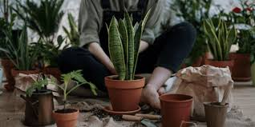

Decorating with Plants
There are a lot of mental benefits from adding greenery to a room. The therapeutic activities of watering, nurturing and seeing them grow new legs (yes I call their stems legs) is incredible. When I design a room or a full home, it is always with a certain design style in mind. We all know that there are different Interior Design styles which means that certain furniture and decor are necessary to achieve that look. Although you cannot go wrong with adding plants to your interior, it is worth considering the physical style of the plant to ensure you nail the look!